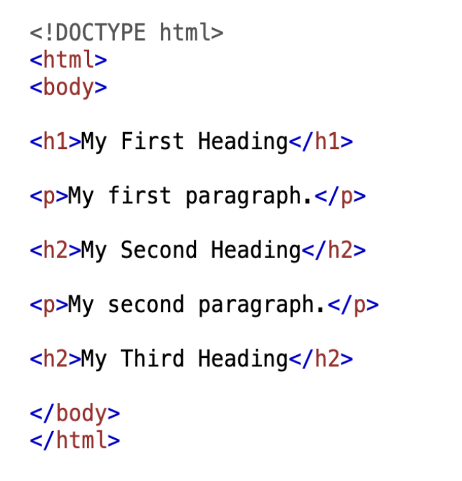
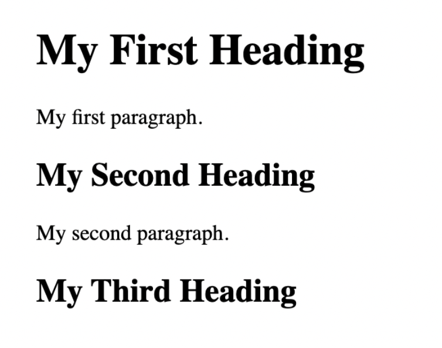

5 Outils de collecte de données
La révolution numérique engendrée par l’émergence du Big Data représente un important défi pour le monde des sciences sociales (Manovich, 2011; Burrows et Savage, 2014). Elle constitue également une opportunité de recherche enrichissante et innovante permettant une compréhension plus accrue des phénomènes sociaux étudiés par la communauté scientifique (Connelly et al., 2016). Cette meilleure compréhension est permise, entre autres, par l’accès à des données massives concernant les trois acteurs clés de la société démocratique: les citoyens, les médias et les décideurs (Schroeder, 2014; Kramer, 2014). Si l’accès à ces données représente un défi éthique et théorique, tel qu’explicité lors des chapitres précédents, elle représente également un défi technique pour les chercheurs.euses voulant exploiter le potentiel et les opportunités offertes par les données massives (Burrows et Savage, 2014).
Le chapitre qui suit vise à offrir un portrait des outils de collectes de données pouvant être exploitées par les scientifiques désirant entreprendre des recherches en sciences sociales numériques. Toutefois, la portée de ce chapitre s’étend plus loin que les outils traditionnels de collecte de données en abordant le potentiel émanant de la programmation en matière de collecte de données brutes pouvant être analysées par les chercheurs.ses. Les lignes suivantes mettront un accent particulier sur le web scraping et les opportunités de recherche qui en découlent. Ce chapitre offre donc un tour d’horizon des outils disponibles à la communauté scientifique tout en présentant les manières d’exploiter le web scraping et en offrant des exemples concrets de son utilisation.
5.2


5.2.1 PIÈGE: NE PAS SE RESTREINDRE AUX OUTILS TRADITIONNELS DE RECHERCHE.
Ces outils sont très utiles et relativement faciles à utiliser. Il ne faut toutefois pas tomber dans le piège de se limiter aux outils traditionnels de recherche. En effet, les récentes transformations technologiques élargissent considérablement le champ de possibilités offertes à la communauté scientifique, notamment en raison de la nature massive des données qui lui est accessible. Non seulement ces données sont nombreuses, mais elles sont accessibles par le biais de connaissances de base en programmation. La section suivante aborde un outil fondamental de la collecte de données en sciences sociales numériques, les extracteurs webs.
5.3 Arpentage et choix éditorial: le web scraping - collecter automatiquement des données provenant de sites web
Chacun des acteurs démocratiques énumérés précédemment peut également être étudié par le biais d’extracteurs qui offrent un accès à des données numériques massives. Les extracteurs de données numériques sont des infrastructures de code permettant d’extraire des données brutes d’une source numérique définie. La section suivante explique comment ces extracteurs peuvent être utiles dans un contexte de recherche en sciences sociales numériques.
L’émergence du numérique représente une opportunité hors pair d’accès à un volume important de données, qui permettent ainsi une analyse approfondie des phénomènes politiques contemporains. Toutefois, l’accès à de telles données peut s’avérer complexe, non-fiable ou encore coûteux. Par exemple, des données parlementaires peuvent être accessibles sur les sites internet des parlements et institutions en questions. L’accès à ces données se voit toutefois complexifié par la nécessité d’avoir des identifiants ou encore de payer pour les dites données. De plus, la qualité de ces données n’est pas assurée, en plus du fait qu’elles peuvent être mal-structurées. Ainsi, l’accès à des données massives représente un défi considérable pour la communauté scientifique tentant d’entreprendre des recherches utilisant un volume important de données.
C’est dans cette optique que les extracteurs de données numériques peuvent être utiles. Plus précisément, le web scraping permet l’extraction de données provenant de sites webs qui seront ensuite converties dans un format utile aux scientifiques de données. Dans un contexte de recherche en science politique, le développement de scrapers permet de récolter automatiquement les données de sites internets pertinents qui pourront ensuite être utilisées afin de mener à terme un projet de recherche. Les sites desquels les données seront extraites dépendent du sujet de recherche d’intérêt de la personne entreprenant la recherche. Par exemple, un code peut extraire de manière automatisée les débats des parlements, les communiqués de presse des gouvernants, les plateformes électorales des partis politiques, ce qui offre un accès inégalé aux chercheurs.euses aux données de décideurs. De telles données pourraient mener à des analyses poussées sur le contenu et le ton des débats parlementaires. Dans une autre optique, des extracteurs peuvent également offrir l’accès aux données provenant de médias socionumériques comme Twitter (maintenant X) ou Facebook . Un extracteur peut, par exemple, être en mesure de répertorier l’ensemble des Tweets de journalistes, de politiciens ou encore de citoyens de manière automatisée, offrant un accès inégalé aux chercheurs.euses à des données massives exclusives.
5.3.1 PIÈGE: LA LÉGALITÉ DES EXTRACTEURS DE DONNÉES
Il faut toutefois être vigilant quant à la nature des données extraites. Avant d’extraire quelconque information, il est absolument primordial de s’assurer que les données soient publiques, faute de quoi l’extraction serait illégale. Il est donc recommandé de prendre connaissance des termes et conditions des sites webs étudiés afin de s’assurer de la légalité de l’extraction de données. Il est également important de respecter toute norme de droit d’auteurs et de propriété intellectuelles ou physique des données. De plus, ce n’est pas parce que des données sont publiques qu’il est nécessairement légal de les extraire et de les utiliser en recherche. En effet, il ne faut pas faire ressortir dans les données extraites quelconque information privée qui pourrait permettre d’identifier des individus (comme des numéros de téléphone, des adresses courriels, des codes postaux, etc.)
5.3.2 RACCOURCI: LES API.
L’élaboration d’extracteurs est toutefois facilitée par l’existence d’API (Application programming interface) sur les plateformes exploitées. L’API d’un site ou d’une application, souvent fournie par le site, permet à un tierce partie d’avoir accès à du code expliquant le fonctionnement de la plateforme étudiée, ce qui en facilite l’extraction de données. Par exemple, Twitter possédait, avant les changements de directions récents, un API qui facilitait l’élaboration d’un extracteur. En contrepartie, Facebook ne possède pas d’API, ce qui rend l’accès à ses données beaucoup plus complexe. Un API fournit des données structurées dans un format lisible tel que JSON (JavaScript Object Notation). En raison de l’automatisation, les API réduisent les chances d’erreurs dans le processus de scraping, ils ont tendance à maintenir une interface plus stable et conviviale. C’est un grand changement comparé aux fichiers HTML, où ces derniers ont des mises en page qui changent fréquemment de structure.
Un extracteur peut également offrir l’accès à des données médiatiques, en codant un accès à des fils RSS ou encore aux HTML des médias extraits. Les fils RSS sont des formats de données qu’il est possible de recevoir automatiquement lors de mise à jour sur un site particulier. Par exemple, La Presse change ses Unes plusieurs fois dans une même journée. En extractant l’accès aux fils RSS, il est possible de recevoir lesdites mises à jour automatiquement. Ce processus accélère grandement la collecte de données. Bien que les API aient souvent une limite de taux, restreignant le nombre de requêtes possible, cela aide à éviter la surcharge sur les serveurs et garantit en même temps une utilisation équitable des ressources.
Finalement, les API simplifient le travail de chacun et chacune par les mises à jour et maintenances. Pour être plus précis, les API, étant maintenus par les fournisseurs de services, sont modifiés au fur et à mesure que le site évolue. Par exemple, si la structure de X est modifiée, son API sera également modifié. Cela évite à ceux demandant l’accès d’ajuster leurs scripts de scraping pour prendre en compte les changements sur le site.
En somme, l’utilisation d’extracteurs webs facilite grandement l’acquisition de données massives. Plutôt que d’avoir à payer pour des données dont la qualité n’est pas assurée, l’utilisation d’extracteurs permet un accès plus facile et précis à des données provenant de sites web. L’élaboration d’un extracteur est toutefois une tâche complexe qui requiert un certain nombre de connaissances en lien avec les langages de programmation. Le chapitre 2 du présent ouvrage offre un survol du langage fonctionnel R, qui est utilisé par de nombreux développeurs lors de l’écriture d’extracteurs. R est également reconnu pour ces fonctionnalités statistiques qui sont, elles aussi, abordées ultérieurement dans ce livre. L’utilisation d’extracteurs webs permettent aux chercheurs.euses de faire plusieurs coups d’une seule pierre. Non seulement le développement d’extracteurs permet de se familiariser avec le langage R, qui est un atout essentiel dans la recherche en sciences sociales numériques, mais ce même développement permet un accès inégalé à des données massives qui pourront ensuite être analysées. Le développement d’extracteurs est donc relativement simple dépendamment du site que l’on vise à extraire. Ainsi, des connaissances en R sont essentielles au développement d’extracteurs, et la complexité du code évoluera dépendamment du site qui sera extrait. La section suivante présente les outils nécessaires à l’entreprise d’extraction de données web sur R.
5.3.3 Critères de sélection
Le web scraping est un outil accessible, particulièrement comme il s’agit d’une méthode libre de coûts monétaires. En effet, à moins de circonstances exceptionnelles, le web scraping est gratuit. Le coût serait plutôt dans l’acquisition de connaissances préalables en code puis dans l’apprentissage de la méthode. Malgré cette nuance, l’absence de coûts monétaires liés à cet outil favorise son accessibilité à l’ensemble de la communauté scientifique.
Additionnellement, le web scraping jouit d’une grande communauté d’utilisateurs.ices rendant accessible leurs connaissances, ce qui favorise la diffusion des savoirs liés à l’utilisation de cet outil. De nombreux forums d’aide peuvent alors être consultés gratuitement par les chercheurs.euses voulant se familiariser avec le web scraping. De nombreux forums sont présents sur le site Stack Overflow, et certains chapitres d’ouvrages collectifs vulgarisant l’utilisation de l’outil sont également dispinible gratuitement en ligne (voir par exemple le chapitre Web scraping du livre R for Data Science d’Hadley Wickham, 2022).
Le web scraping est un outil de recherche très en vogue dans la communauté des sciences sociales. La possibilité d’obtenir une quantité importante de données de manière efficace et gratuite représente une opportunité depuis largement exploitée par les chercheurs.euses en sciences sociales, en témoigne l’émergence de cours dédiés au web scraping dans de nombreuses écoles méthodologiques de renom (telles qu’ICPSR ou l’école d’été méthodologique du European Consortium for Political Research).
Le web scraping avec le logiciel R permet de récolter des données qui pourront ensuite être traitées et exploiter avec R, ce qui favorise donc la compatibilité de l’outil. De plus, les données extraites peuvent être exportées dans de nombreux formats tels que des fichiers .csv, .RDS, .xlsx, et plus encore.
Tel q’explicité précédemment, la présence d’une grande communauté d’utilisateurs.ices de l’outil favorise la transparence et la réplicabilité des différents résultats produits lors de l’utilisation du web scraping.
5.4 Manuel d’instruction: extraire des données avec R
5.4.1 L’importance de comprendre la structure du code HTML
Afin d’être à l’aise avec les extracteurs web, il peut être un atout de se familiariser avec la structure de base du langage HTML, dont l’acronyme signifie “Hypertext Markup Language”. Il s’agit d’un langage de code qui permet la description du contenu de la page web. La structure du code HTML est hiérarchique, ce qui signifie que le code est divisé en différentes sections qui occupent différents rôles. Ces sections sont délimitées par des “tags”, qui définissent le début ou la fin d’une section du site. Ce sont ces différentes sections qui seront accessibles pour l’extraction, et le code HTML permet de comprendre ce qui se situe dans ces sections. La Figure [] représente un exemple de base de code HTML.

Dans l’exemple ci-haut, le tag <h1 représente le titre du HTML. Le signe <p permet de débuter le paragraphe de texte suivant le titre, et cette section devra être terminée par le sigle p>. Les sections <p> délimitent les paragraphes écrits dans chacunes des sections. Les sigles <h2> produisent une sous-section et un sous titre, qui pourra être complémenté d’un paragraphe écrit. La Figure 2 démontre le texte produit par le code HTML.

La structure de base du langage HTML est somme toute simple et intuitive et tous les sites web sur internet sont fondés sur du code HTML. N’importe qui étant intéressé à extraire des données de sites webs et tirer profit de la simplicité et l’accessibilité des données qui peuvent en émerger devraient donc se familiariser avec ce langage. De nombreuses sources en ligne sont disponibles afin d’apprendre sur le fonctionnement du code HTML. Nous vous encourageons donc fortement à explorer plus en profondeur les structures du code HTML afin d’obtenir une compréhension accrue du fonctionnement des sites webs que vous allez extraire. Comme le code HTML de chaque site est accessible grâce à l’URL, les données présentes sur des sites webs sont plus que jamais accessible à la communauté scientifique.
5.4.2 Le package rvest: son fonctionnement et ses possibilités
Cet ouvrage recommande l’utilisation du paquetage “Rvest” afin de récolter des données sur des pages web, qu’elles aient ou non un API. Rvest est construit autour des paquetages “xml2” et “httr” afin de faciliter la manipulation du HTML et XML. Rvest est principalement conçu pour scraper une seule page web alors que pour scraper de multiples pages, d’autres paquetages sont recommandés, notamment “polite”. Cet ouvrage ne rentre pas dans les détails et ne se concentrera que sur Rvest.
5.4.2.1 Fonctions de base du paquetage rvest utilisant pour exemple le site de LEGISinfo
La première étape est l’installation et le chargement des paquetages “tidyverse” et “rvest” sur sa console Rstudio. Il est important de les charger séparément car RVEST ne fait pas partie des paquetages de base du TIDYVERSE. Nous installerons ce dernier car il amène des fonctions pratiques au scraping
install.packages("rvest")
install.packages("tidyverse")
library(rvest)
library(tidyverse)Pour débuter l’extraction des données, il suffit de copier l’URL de la page web à scraper et la coller dans l’appel de la fonction read_html(). Il est important de stocker l’URL dans l’objet “html_LEGISinfo.
html_LEGISinfo <- read_html("https://www.parl.ca/legisinfo/en/bills")
html_LEGISinfoLors de l’exécution des lignes de code ci-hautes, la console retournera les éléments suivants:
{html_document}
<html lang="en" xml:lang="en" xmlns="http://www.w3.org/1999/xhtml">
[1] <head>\n<meta http-equiv="Content-Type" content="text/html; charset=UTF-8">\n<meta ...
[2] <body class="body-wrapper ce-parl vh-100">\r\n <header class="d-print-none"><!-- ...Une fois que les éléments que l’on souhaite extraire sont déterminés, il faut les trouver dans le document HTML. Pour ce faire, il faut se référer au style CSS (cascading style sheets), langage définissant la forme visuelle d’un document HTML. Les éléments HTML sont identifiés avec des “sélecteurs CSS”, ayant pour but de les regrouper pour faciliter leur extraction. Pour les bases du scraping, il n’est pas primordial de comprendre les détails des sélecteurs CSS. Seule la compréhension de la structure d’un document HTML est nécessaire afin d’en faire l’extraction d’éléments. L’important est d’être en mesure d’identifier les sélecteurs CSS liés aux éléments souhaités, sans avoir à comprendre le sélecteur en question.
D’abord, html_elements doit être utilisé en premier pour trouver toutes les observations souhaitées, car cette fonction retourne une liste de tous les noeuds qui matchent avec l’appel de fonction. Le nombre d’observations est indiqué par xml_nodeset(). Comme html_element retourne seulement le premier élément qui match, il faut l’utiliser en deuxième, après html_elements. Cette seconde fonction à pour but de trouver les éléments qui deviendront les variables à extraire. Pour l’exemple de LEGISinfo, nous commencerons par extraire tous les éléments <a>. Comme html_elements retourne une liste, nous voulons commencer avec cette fonction.
html_LEGISinfo |> html_elements("a")Qui retourne les éléments suivants:
{xml_nodeset (180)}
[1] <a href="#StartOfContent" class="ce-parl-skipnav sr-only sr-only-focusable">Skip to m ...
[2] <a href="//www.parl.ca" class="ce-parl-btn float-left text-nowrap">Parliament of Cana ...
[3] <a href="https://visit.parl.ca/index-e.html" rel="external">\n\t\t ...html_LEGISinfo |> html_elements("a")Qui retourne les éléments suivants:
{xml_nodeset (180)}
[1] <a href="#StartOfContent" class="ce-parl-skipnav sr-only sr-only-focusable">Skip to m ...
[2] <a href="//www.parl.ca" class="ce-parl-btn float-left text-nowrap">Parliament of Cana ...
[3] <a href="https://visit.parl.ca/index-e.html" rel="external">\n\t\t ...html_LEGISinfo |> html_elements("a"){html_node}
<a href="#StartOfContent" class="ce-parl-skipnav sr-only sr-only-focusable">L’exécution du bloc de code ci-haut produit le résultat suivant dans la console
{xml_nodeset (60)}
[1] <a class="bill-tile-container senate" href="/legisinfo/en/bill/44-1/s-1">\r\n\r\n ...
[2] <a class="bill-tile-container senate" href="/legisinfo/en/bill/44-1/s-2">\r\n\r\n ...
[3] <a class="bill-tile-container senate" href="/legisinfo/en/bill/44-1/s-3">\r\n\r\n ...À partir de la liste d’éléments de classe bill-tile-container, nous appelons la fonction html_element, qui lorsque appliqué à une liste permet d’extraire la première correspondance de tous les éléments de cette liste au lieu de seulement retourner le premier nœud correspondant du document HTML. Nous cherchons à extraire ici les éléments de classe parliament-session par le biais de la ligne de code suivante:
BillTile_LEGISinfo |> html_element(".parliament-session") Ce qui produit le résultat suivant dans la console:
{xml_nodeset (60)}
[1] <div class="parliament-session">\n<span class="parl-session-number">44th</span> Parlia ...
[2] <div class="parliament-session">\n<span class="parl-session-number">44th</span> Parlia ...
[3] <div class="parliament-session">\n<span class="parl-session-number">44th</span> Parlia ...Bien que moins utile pour la mise en situation actuelle, il est également possible d’extraire les éléments en fonction de leur “id attribute”. Pour ce faire, il faut mettre un hashtag (#) avant l’élément à extraire lors de l’appel de la fonction. Le id attribute retourne toujours un seul élément car ils sont uniques à chaque document HTML. Voici la ligne de code et le résultat produit par une telle opération
html_LEGISinfo |> html_elements("#StartOfContent"){xml_nodeset (1)}
[1] <a id="StartOfContent" tabindex="-1"></a>Nous avons créé précédemment l’objet BillTile_LEGISinfo pour ensuite y extraire les éléments de classe parliament-session. Nous appelons cette étape l’imbrication des sélections. Lorsque la fonction html_element est appliquée à un vecteur de liste html_elements, la console retourne le premier nœud correspondant de chaque élément de la liste. Il est important d’utiliser html_element à cette étape car il retourne un NA même lorsqu’il n’y a pas d’éléments correspondants, alors que html_elements ne retournera pas la valeur manquante. Dans l’exemple de LEGISinfo, c’est exactement ce que l’on a voulu faire pour obtenir les éléments de classe parliament-session. Nous sommes maintenant arrivés à l’étape d’extraire les données souhaitées. C’est assez simple, il ne suffit que d’appliquer la fonction html_text2 sur l’appel de html_element sur l’objet à moissonner, dans ce cas ci BillTile_LEGISinfo. Il est important de prendre en compte que nous connaissons ici les éléments à extraire, car le script du document a été scruté préalablement grâce à la fonction “inspect” de Google Chrome ainsi que les diverses fonctions du package rvest. Afin d’extraire les autres informations souhaitées, nous allons également créer deux autres objets qui seront à leur tour moissonnés. Voici les différentes opérations et leurs résultats dans la console:
Code
BillTile_LEGISinfo |> html_element("h4") |> html_text2()Console
[1] "S-1" "S-2" "S-3" "S-4" "S-5"...Code
BillTile_LEGISinfo |> html_element(".parliament-session") |> html_text2().Console
[1] "44th Parliament, 1st session" "44th Parliament, 1st session"...Code
BillTile_LEGISinfo |> html_element("h5") |> html_text2()Console
[1] "An Act relating to railways"
[2] "An Act to amend the Parliament of Canada Act and to make consequential and related amendments to other Acts"
[3] "An Act to amend the Judges Act"
...Code
BillBS_LEGISinfo <- html_LEGISinfo |> html_elements(".bottom-section")
BillBS_LEGISinfo |> html_element("dd") |> html_text2()Console
[1] "Introduced as pro forma bill" "Senate bill awaiting first reading in the House of Commons"
[3] "Bill not proceeded with" "Royal assent received"
[5] "Royal assent received" "At second reading in the House of Commons"
...Code
Bill_stage <- html_LEGISinfo |> html_elements(".progress-bar-description")
Bill_stage |> html_element("dd") |> html_text2()Console
[1] "First reading in the Senate" "Third reading in the Senate" "First reading in the Senate" "Royal assent" "Royal assent"
[6] "First reading in the House of Commons" "First reading in the House of Commons" "Royal assent" "First reading in the House of Commons" "Royal assent"
...
Maintenant que nous avons tous les éléments souhaités, il ne reste plus qu’à utiliser la fonction tibble du tidyverse. Ce paquetage permet de facilement créer des dataframes sur R. Voici le script à produire dans l’exemple de LEGISinfo, ainsi que son résultat, un dataframe contenant le numéro de projet de loi, sa session parlementaire, son nom, son statut et son dernier stage de réalisation :
Table_LEGISinfo <- tibble(
Bill = Bill_LEGISinfo |> html_element("h4") |> html_text2(),
Session = Bill_LEGISinfo |> html_element(".parliament-session") |> html_text2(),
Name = Bill_LEGISinfo |> html_element("h5") |> html_text2(),
Status = BillBS_LEGISinfo |> html_element("dd") |> html_text2(),
Stage = Bill_stage |> html_element("dd") |> html_text2()
)Il est important de noter que ce chapitre ne permet que de scraper des documents html uniques. Afin de scraper plusieurs page web simultanément, il faudra utiliser d’autres paquetages ainsi que des boucles, ce qui est trop complexe pour cet ouvrage d’introduction. Maintenant que vous savez extraire des informations d’un document html pour le mettre dans une base de données, voici d’autres applications pratiques de rvest à cet effet.
Il est possible d’extraire les éléments en fonction de leur attribut grâce à html_attr(). Un attribut est une information supplémentaire associé à une balise html. Voici l’attribut href qui permet d’extraire l’URL du projet de loi en question. De cette façon, il est possible de boucler sur les href afin de moissonner divers niveaux d’une page HTML. Lorsque l’extraction se fait sur plusieurs niveaux, la pratique passe du moissonnage pour devenir de l’indexation. Cette pratique, bien que fondamentale, ne sera pas abordée en raison de sa complexité avancée. Tel que mentionné plus haut, cet ouvrage ne se concentre que sur le moissonnage.
BillTile_LEGISinfo |> html_attr("href")La ligne de code ci-haut produit le résultat suivant dans la console
1] "/legisinfo/en/bill/44-1/s-1" "/legisinfo/en/bill/44-1/s-2" "/legisinfo/en/bill/44-1/s-3" "/legisinfo/en/bill/44-1/s-4" "/legisinfo/en/bill/44-1/s-5" "/legisinfo/en/bill/44-1/s-6"
[7] "/legisinfo/en/bill/44-1/s-7" "/legisinfo/en/bill/44-1/s-8" "/legisinfo/en/bill/44-1/s-9" "/legisinfo/en/bill/44-1/s-10" "/legisinfo/en/bill/44-1/s-11" "/legisinfo/en/bill/44-1/s-12"
[13] "/legisinfo/en/bill/44-1/s-13" "/legisinfo/en/bill/44-1/s-14" "/legisinfo/en/bill/44-1/s-15" "/legisinfo/en/bill/44-1/s-16" "/legisinfo/en/bill/44-1/s-17" "/legisinfo/en/bill/44-1/s-201"Il est également possible d’extraire des tables. Pour cet exemple, le site de LEGISinfo ne comporte malheureusement pas de tables, le script de https://r4ds.hadley.nz/webscraping sera donc utilisé. Celui-ci utilise la fonction minimal_html pour créer un script html, qui n’est pas nécessaire au moissonnage, mais toutefois utilisé pour cet exemple.
htmltest <- minimal_html("
<table class='mytable'>
<tr><th>x</th> <th>y</th></tr>
<tr><td>1.5</td> <td>2.7</td></tr>
<tr><td>4.9</td> <td>1.3</td></tr>
<tr><td>7.2</td> <td>8.1</td></tr>
</table>
")
htmltest |>
html_element(".mytable") |> html_table()L’opération précédante produit le résultat suivant dans la console
# A tibble: 3 × 2
x y
<dbl> <dbl>
1 1.5 2.7
2 4.9 1.3
3 7.2 8.1En conclusion de cette section, lorsque l’on moissonne un document HTML, il est important de ne pas se laisser intimider par la structure du document. Il ne faut pas perdre patience afin de trouver les bons sélecteurs. Ce sont des structures peu familières au début, mais on s’y habitue rapidement. Ensuite, nous recommandons d’utiliser l’outil de développeur de votre navigateur web afin de pouvoir trouver les sélecteurs souhaités. L’interface de Chrome est particulièrement conviviale, et est recommandée. Il suffit de cliquer sur “inspect” suite à un clic droit, et il est possible de chercher les éléments souhaités dans le script. Finalement, avant de scrapper le contenu d’un site web, il est important de vérifier s’il n’offre pas déjà une option pour télécharger les données ! C’est le cas de l’exemple utilisé ici (LEGISinfo), il est possible dans certains cas de télécharger les données directement sur le site web, ce qui rend parfois le besoin de moissonner désuet.
5.5 Conclusion et discussion:
Ce chapitre a comme objectif de dresser un portrait des différents outils de collecte de données mis à la disposition des scientifiques s’intéressant aux sciences sociales tout en voulant exploiter le potentiel de la révolution numérique. Bien que non exhaustif, ce chapitre fait un survol d’outils traditionnels de récolte de données numériques en sciences sociales. Par exemple, les outils de sondages ou de récolte de données médiatiques sont présentés dans les paragraphes ci-haut. En revanche, ce chapitre s’ancre autour du postulat qu’il ne faut pas se limiter aux outils de récolte de données traditionnels, et que la révolution numérique engendre d’importantes opportunités d’acquisition de données massives et exclusives par le biais des extracteurs de données. Ces extracteurs ont pour but de moissonner les données présentes sur un site web afin de les rendre disponibles pour l’analyse scientifique. Une section complète de ce chapitre vise à vulgariser le processus d’extraction de données provenant de site web en utilisant l’exemple du site LégisInfo, ce qui permet aux lecteurs.ices de se familiariser avec le processus de moissonnage de données.
Toutefois, un seul chapitre ne permet pas de relever l’ensemble des outils de collecte de données disponibles pour la communauté scientifique. Néanmoins, les outils présentés permettent un aperçu à la fois d’outils plus conventionnels et répandus de collecte de données numériques, mais également de dresser un portrait du potentiel d’extraction permis par la maîtrise de R.
Bibliographie:
Schroeder, R. (2014). Big data and the brave new world of social media research. Big Data & Society, 1(2), 2053951714563194.
Chadwick, A. (2017). The hybrid media system: Politics and power. Oxford University Press.
Connelly, R., Playford, C. J., Gayle, V., & Dibben, C. (2016). The role of administrative data in the big data revolution in social science research. Social science research, 59, 1-12.
Manovich, L. (2011). Trending: The promises and the challenges of big social data. Debates in the digital humanities, 2(1), 460-475.
Burrows, R., & Savage, M. (2014). After the crisis? Big Data and the methodological challenges of empirical sociology. Big data & society, 1(1), 2053951714540280.
Kramer, A. D., Guillory, J. E., & Hancock, J. T. (2014). Experimental evidence of massive-scale emotional contagion through social networks. Proceedings of the National academy of Sciences of the United States of America, 111(24), 8788.
Andrade, C. (2020). The Limitations of Online Surveys. Indian Journal of Psychological Medicine, 42(6), 575-576. https://doi.org/10.1177/0253717620957496
Evans, J. R., & Mathur, A. (2018). The value of online surveys: A look back and a look ahead. Internet Research, 28(4), 854-887. https://doi.org/10.1108/IntR-03-2018-0089
Nayak, M., & K A, N. (2019). Strengths and Weakness of Online Surveys. 24, 31-38. https://doi.org/10.9790/0837-2405053138